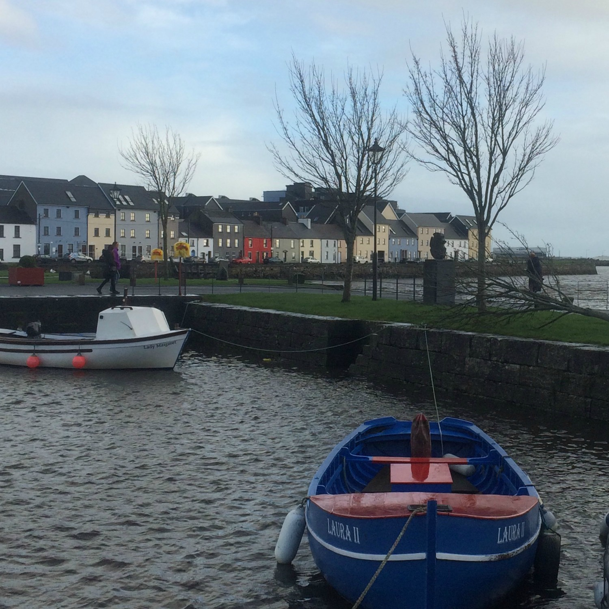

Study abroad and other travels
In the fall of my junior year, I studied abroad in Galway, Ireland. Living and attending college in Galway was a once-in-a-lifetime experience that helped to shape my entire college career.
Galway
Galway is the third largest city in Ireland after Dublin and Cork. However, while Dublin and Cork feel much more urban, Galway is more like a big town. The National University of Ireland, Galway, which I attended for a semester, draws students from all over Ireland as well as the rest of the world, and these college-age students make up a large part of Galway's population.
Galway Bay
Galway is located on the West Coast of Ireland, which offered me a unique perspective on Irish language and history. In one of my classes, I was able to study the ebb and flow of the Irish language throughout the country and examine the political contexts in which it flourished, and those in which it almost died out. This subject was fascinating, and the stunning landscape of the West of Ireland was an added bonus.
The Cliffs of Moher
Dunguaire Castle
Other travels
Edinburgh, Scotland
Edinburgh, Scotland
The London Eye
Fleet Street, London
Krakow, Poland
Schindler's Factory, Krakow, Poland
Astronomical Clock, Prague, Czech Republic
Prague, Czech Republic